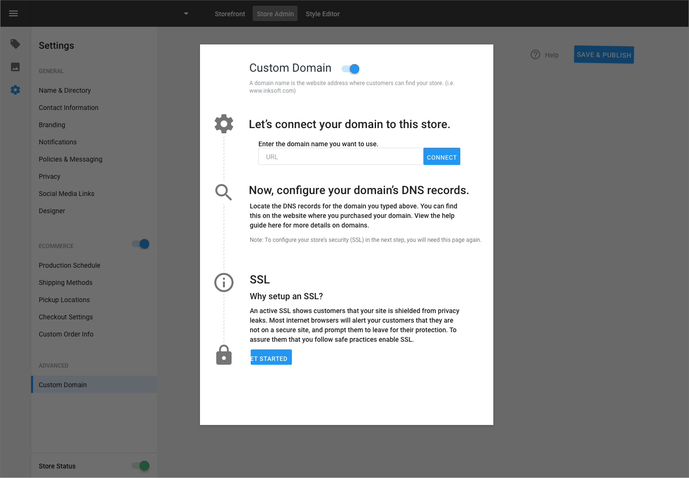
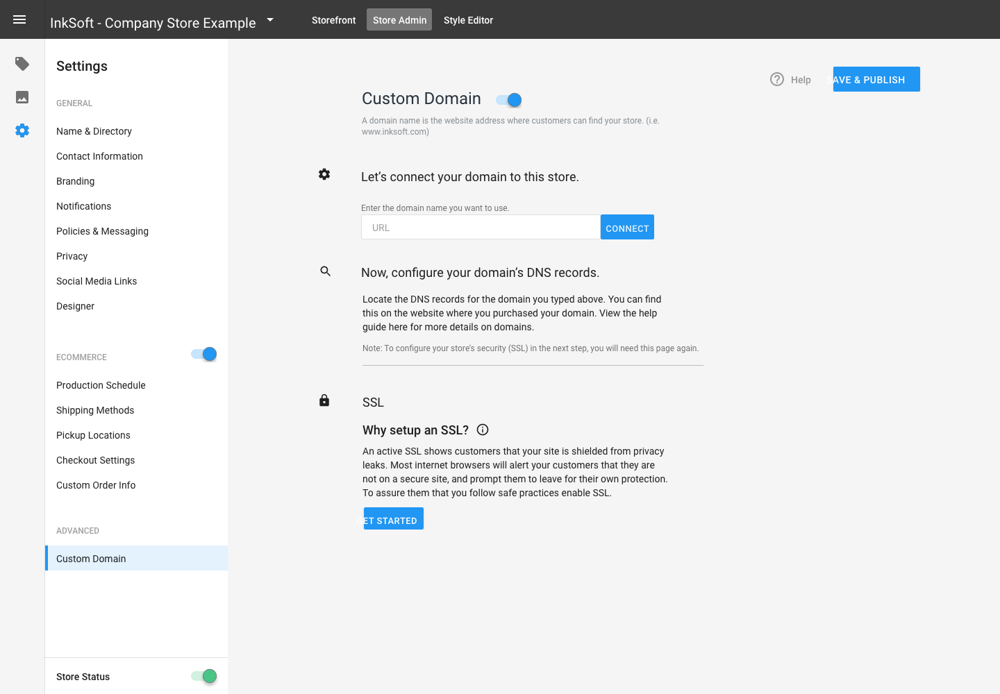

The SSL configuration widget — replacing a confusing multi-system process with clear, in-context guidance.
InkSoft
Replacing a high-friction support workflow with a simple, communicative SSL setup widget for micro-storefront owners.
The SSL configuration widget — replacing a confusing multi-system process with clear, in-context guidance.
The Problem
InkSoft offered free SSL certificates to every storefront owner on the platform. As users became more aware of the importance of securing their online shops, they wanted to take advantage of it. But only 34% of active users had actually configured their SSL.
The SSL settings were buried in an advanced configuration area that many users had never visited. For those who did find it, the setup required working in two systems simultaneously — InkSoft's panel and their domain provider's configuration panel — often encountering both for the first time.
Users and support staff alike felt lost during SSL installation. They were doing a lot of work to set up something they didn't clearly understand the function of, with no system feedback to tell them if it was working.
The result? Many shop owners avoided securing their stores entirely — until a customer got locked out or couldn't complete a checkout. By then, the damage to their business was already done.

SSL verification state — clear system communication about setup progress.

Mobile — the SSL widget adapted for smaller screens.
Research
I used InkSoft's Facebook Group to find users who had connected their own domain to the platform — the exact audience who needed SSL. I sent a short survey focused on three questions: Were they aware of the free security features? Were they familiar with the advanced settings area? How comfortable were they with their domain provider's configuration panel?
From 22 complete responses, the picture was clear. Users' biggest concerns about SSL setup were:
What they expected was straightforward: a dedicated, reliable place to check their SSL status and clear, numbered directions.

The domain configuration panel — where users previously had to navigate a confusing multi-step process.

Configuration states — showing users clear progress through the SSL setup.
Design Process
My process started with whiteboarding sessions with developers to understand what was technically possible. I iterated through sketches to map the user journey and plan interactions, then moved to mockups.
I initially explored a guided wizard approach, but after three iterations I moved toward something simpler: an on-page component that communicated the importance of SSL, showed clearly numbered steps, and provided real-time feedback about setup status. The key design decisions were:
Outcome
After 3 rounds of testing, we landed on a design that transformed SSL setup from a confusing, anxiety-inducing process into a guided, communicative experience. The widget brought a critical security feature out of the shadows and into the everyday workflow of shop owners — many of whom were new to SaaS tools entirely.
By explaining the "why" alongside the "how," and by giving users visible confirmation that their setup was correct, we addressed the root causes of low adoption: confusion, fear, and invisibility.